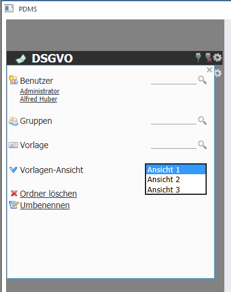

Im Bereich Vorlagenansicht kann zwischen den Ansichten 1, 2 und 3 gewählt werden. Welchen Inhalt diese Ansicht enthalten, wurde zuvor schon bei der Anlage der Vorlage definiert. So ist es möglich innerhalb eines Buches verschiedene Ansichten von Deckblättern zu erzeugen. Im Hintergrund handelt es sich dabei aber immer um dieselbe Vorlage.
